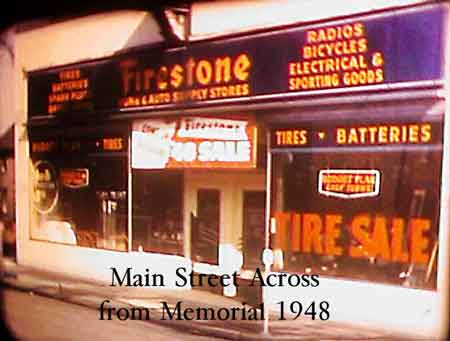

Ward-Thomas Museum


Firestone Store
Ward — Thomas
Museum
Home of the Niles Historical Society
503 Brown Street Niles, Ohio 44446
Click here to become a Niles Historical Society Member or to renew your membership
Click on any photograph to view a larger image, click on image again to zoom into photograph.
|
 |
The Opening of the New Firestone Home and Auto Supply Store. Niles Daily Times May 28, 1942 A wonderland of home supplies in the new Firestone
Home and Auto Supply store which was recently opened at 39 North
Main Street. |
|
| Interior view of expanded departments. |
1942 advertisement for Walter Hagen clubs. |
Among
the newer supplies carried by the local store are nationally known
garden supplies for those who will be working their Victory Gardens.
Seeds, garden tools, and associated equipment are found at the
store. Sports-loving Nilesites will be interested in
complete lines of fishing equipment; nationally known golf clubs
for ladies and men, baseballs, bats, gloves; croquet, badminton,
tennis and many others, featuring such famous names as Walter
Hagen, Forest Hill, Bill Dickey, Wilson and others. |
Western Auto Store on East State Street was a competitor to the Firestone store. S11.281 |
For the stay-ins or those who welcome relaxing entertainment, the store has a complete line of radios and records. Cameras, electrical equipment, luggage, washers, stoves, paint for interiors, exteriors and floors, yacht chairs, ironers are among the many items offered. Sports jackets, work clothes of varying styles, and raincoats are featured. There are many others too numerous to mention. The new store has added 1,500 new items. In addition to these newcomers, the store also offers the old stand-by Firestone regulars; tires, batteries and auto accessories. Myers also announces that the store has free
delivery service. There are four others employed at the store,
including floor salesmen Don With and Virginia Beard
Swindler. |
|
| 1943 Advertisement for Firestone Tires. |
Advertisement for Synthetic Rubber Tires. |
Editor’s note: An article from the Niles Rationing Board that releases new regulations with answers on price-ceilings for consumers and sellers. During World War II many of the items listed for sale in the Firestone Store would become unavailable, especially tires. |
| Niles Daily
Times June 18, 1943 The new application forms, like those used last year, will have a tire inspection record attached, Mr. Stein pointed out. In filling out the forms, applicants should make sure that their tire serial numbers are accurately written in. These numbers may be copied from the old tire record, as corrected at the last tire inspection, unless the applicant has acquired a new tire since then. In this case, he should write in the new tire number and attach a note explaining this to the board. The back part of the present ration book, properly signed, is required as part of the application because it is evidence that the owner held a properly issued ration book and is entitled to a renewal, the chairman explained. Any motorist who has not had at least one tire inspection by a qualified inspector will be denied a renewal. L) War Ration Stamps |
||
| |
||
|
Instructions for War Ration Book. |
War Ration Book No. 3. |
Ad for Firestone War Model Bicycle, 1943. |
|
|
||
{kind=link}
{kind=link}
{kind=link}
{kind=link}
{kind=link}
{kind=link}
{kind=link}
{kind=link}
{kind=link}